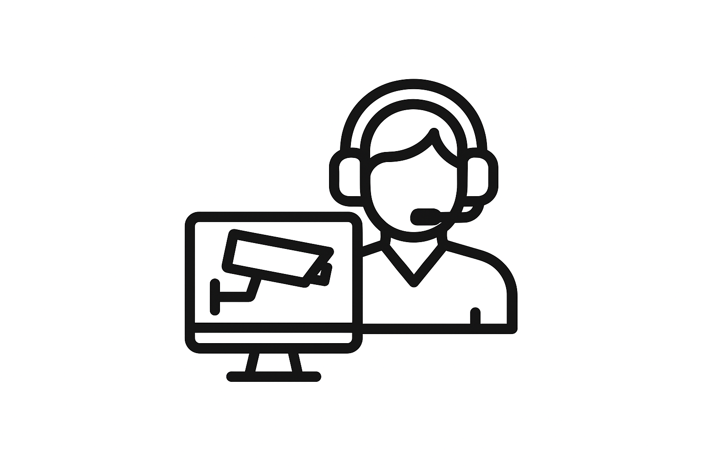

מבוא לשירות
ניטור מצלמות בזמן אמת וזיהוי חריגות באמצעות בינה מלאכותית.
- • תכנון אישי לפי סביבה, סיכונים ותקציב
- • הטמעה חלקה ועמידה ב־SLA
- • תמיכה שוטפת ושדרוגים עתידיים
סקירה כללית
מוקד רואה של ש.א.ש מעניק מענה מקצה־לקצה – החל מאפיון סיכונים ותכנון, דרך התקנה והטמעה, ועד תפעול שוטף ומעקב רציף. אנו משלבים כוח אדם מקצועי, נהלים סדורים וטכנולוגיות מתקדמות כדי לספק הגנה יעילה, עקבית ושקופה ללקוח. כל פתרון מותאם לסביבת הפעילות, לרמת הסיכון ולתקציב, תוך מיקוד בתוצאה העסקית: הפחתת אירועים, קיצור זמני תגובה ושיפור שקט נפשי.
איך זה עובד
הפרויקט מתחיל בפגישת אפיון וביצוע סקר סיכונים. לאחר מכן אנו בונים ארכיטקטורה מתאימה (תשתיות, ציוד, נהלים), מבצעים התקנה ובדיקות קבלה, ומחברים את המערכת למוקד 24/7. לאורך חיי המערכת מתבצעים ניטור, תחזוקה מונעת ושדרוגים – כולל דוחות ביצועים חודשיים ושיחות סטטוס תקופתיות עם הלקוח.
שלבי העבודה
- • אבחון וסקר ראשוני – זיהוי סיכונים והגדרת יעדים
- • תכנון וארכיטקטורה – בחירת רכיבים ונהלים
- • התקנה והטמעה – ביצוע שטח, בדיקות וקבלה
- • חיבור למוקד 24/7 – ניטור, התראות ותגובה
- • אחזקה ושיפור מתמיד – דוחות, מדדים ושדרוגים
למי זה מתאים?
- • עסקים, חנויות ומחסנים
- • משרדים, הייטק וחדרי שרתים
- • אתרי תעשייה ומתקנים רגישים
- • מוסדות חינוך, בריאות ורשויות מקומיות
- • לקוחות פרטיים ובתים צמודי קרקע
יתרונות מרכזיים
- • תכנון מקצועי מותאם־לקוח עם שקיפות מלאה
- • שילוב טכנולוגיות עדכניות (CCTV, אזעקה, AI, תקשורת)
- • מוקד אנושי 24/7 עם פרוטוקולי תגובה
- • דוחות ו־BI תפעולי לשיפור מתמיד
- • שירות והתקנה בכל הארץ, SLA ברור
תוצאה עסקית
הקטנת חשיפות, שיפור זמני תגובה ושקט נפשי – עם מדדים שניתן למדוד ולשפר.
שאלות נפוצות
תוך כמה זמן ניתן להקים את המערך?
בדרך כלל בין מספר ימים לשבועות – תלוי בהיקף ובתשתיות בשטח.
האם יש אחריות ותחזוקה?
כן. אנו מספקים SLA ברור, תחזוקה מונעת ותמיכה רציפה.
אפשר להתחיל בקטן ולהתרחב?
כמובן. אנו מתכננים פתרון מודולרי שניתן להרחבה לפי הצורך.